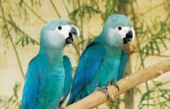
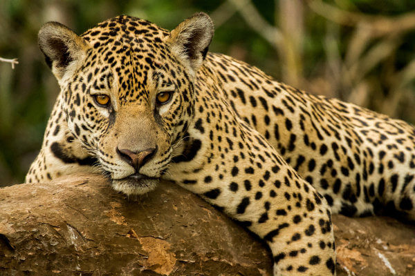
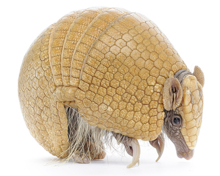
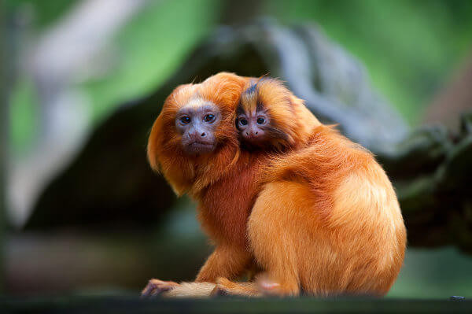
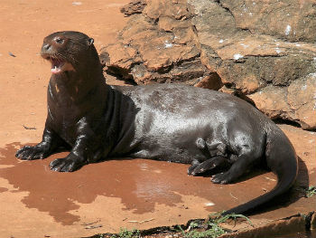

Ararinha-azul (Cyanopsitta spixii): A ararinha-azul está classificada como possivelmente extinta na natureza. Atualmente, existem exemplares dessas aves criados em cativeiro.

Onça-pintada (Panthera onca): A onça-pintada está classificada como quase ameaçada de extinção. Atualmente, observa-se um decréscimo nas populações desses animais.

Tatu-bola (Tolypeutes tricinctus): O tatu-bola, atualmente, está classificado como vulnerável. Sua população também apresenta uma tendência de diminuição.

Mico-leão-dourado (Leontopithecus rosalia): O mico-leão-dourado é uma espécie classificada como em perigo. Sua tendência populacional atual é considerada estável.

Ariranha (Pteronura brasiliensi): Atualmente, essa espécie encontra-se em perigo. Observa-se que a população desses animais está diminuindo.